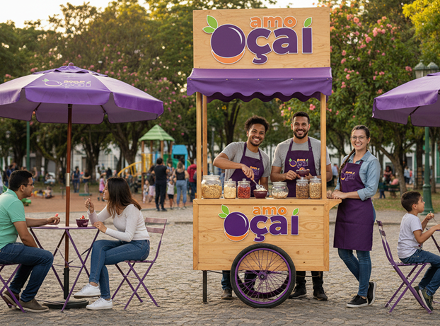
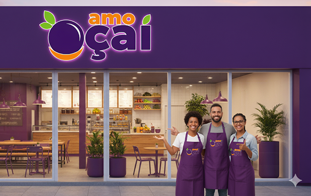

Sobre a Amo Açaí
 Nossa jornada começou com um sonho simples e uma paixão vibrante: o açaí. Ana, Marcos e Sofia, três amigos inseparáveis, compartilhavam não apenas a amizade, mas também um amor incondicional por essa fruta amazônica. Foi em Brumado que, inspirados pela energia contagiante do açaí, decidimos transformar essa paixão em algo mais, algo que pudesse ser compartilhado com todos. Assim, nasceu a Amo Açaí, não apenas como um negócio, mas como a realização de um desejo coletivo de levar sabor, saúde e alegria para a nossa comunidade.
o início, a Amo Açaí era um charmoso carrinho na praça, onde o aroma fresco do açaí e o sorriso dos três amigos já conquistavam os corações. Nosso carrinho, um ponto de encontro e de novas amizades, representava a essência da Amo Açaí: simplicidade, frescor e um toque de carinho em cada tigela. Aprendemos muito nessa fase, conectando-nos diretamente com nossos clientes e aprimorando cada receita para garantir a excelência que sempre buscamos.
Com o tempo, o sonho cresceu, e o carrinho na praça deu lugar à nossa primeira loja, um espaço que projetamos para ser um verdadeiro refúgio de sabor e bem-estar. 
Na Amo Açaí, valorizamos cada detalhe, desde a escolha dos ingredientes mais frescos e de alta qualidade até a criação de um ambiente acolhedor, onde todos se sintam parte da nossa família. Nossa missão é clara: oferecer o melhor açaí, com um toque de afeto e um sorriso em cada atendimento, transformando cada visita em uma experiência memorável.
Nossos valores são a base de tudo o que fazemos: paixão pelo que criamos, compromisso com a qualidade e o frescor dos nossos produtos, e um profundo respeito e carinho por nossos clientes. Acreditamos que o açaí é mais do que uma fruta; é um convite à saúde, à energia e aos bons momentos. Nossa visão é ser a principal referência em açaí na região, expandindo nossa paixão e levando a experiência Amo Açaí para cada vez mais pessoas, sempre mantendo a essência e a qualidade que nos definem.